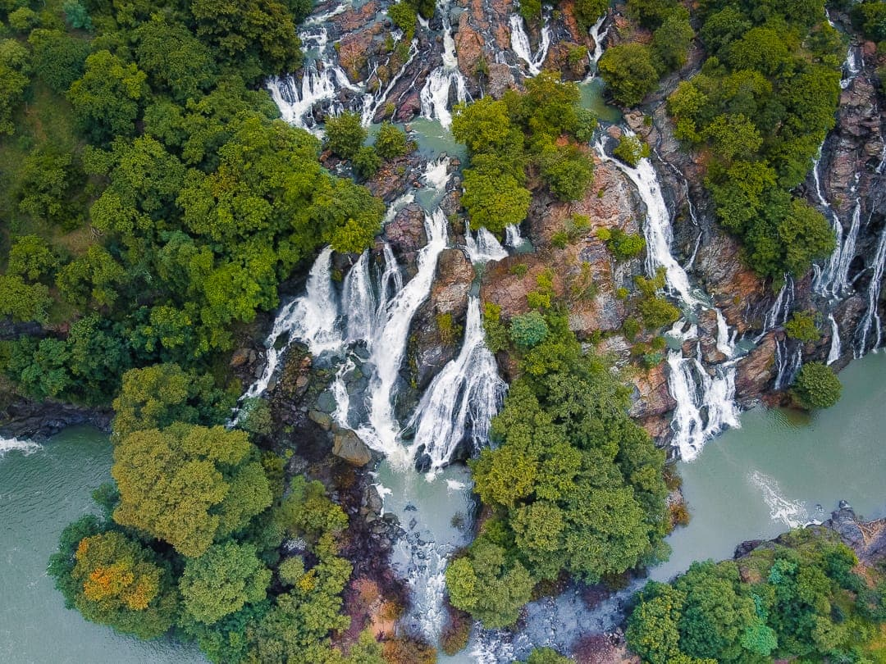
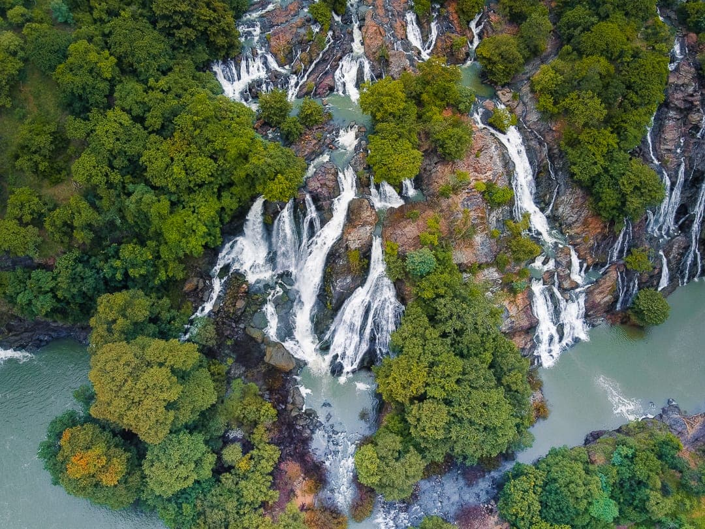
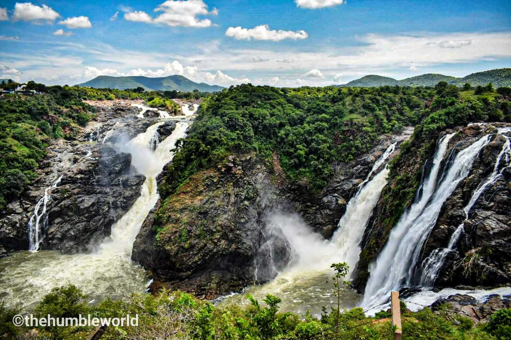
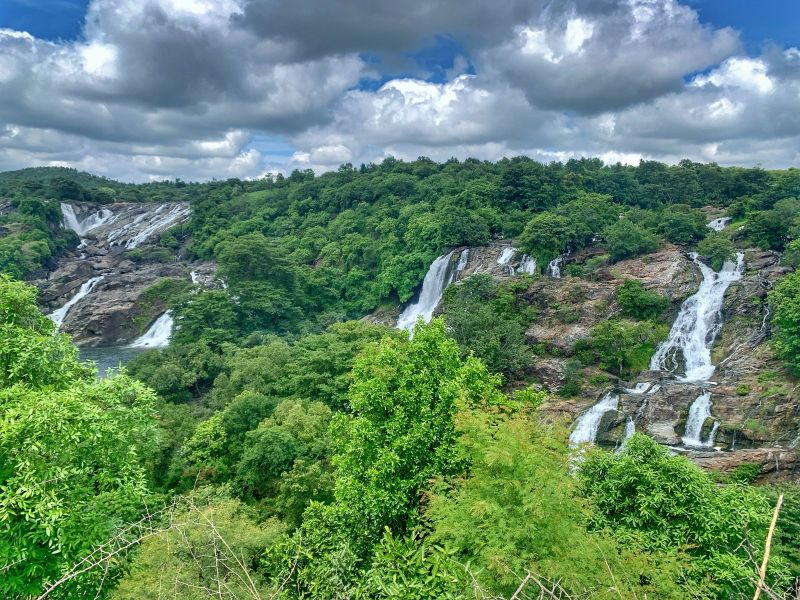
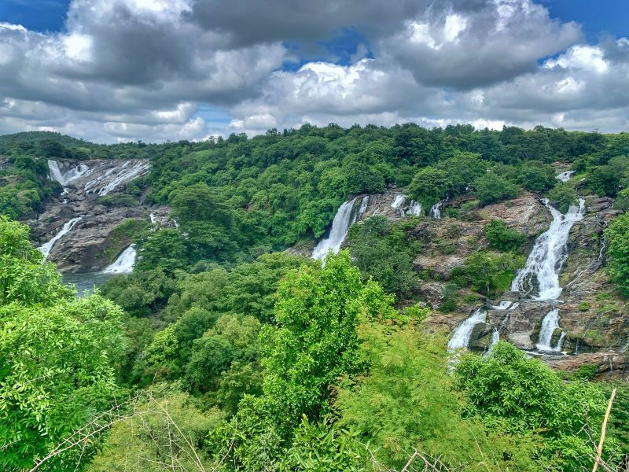
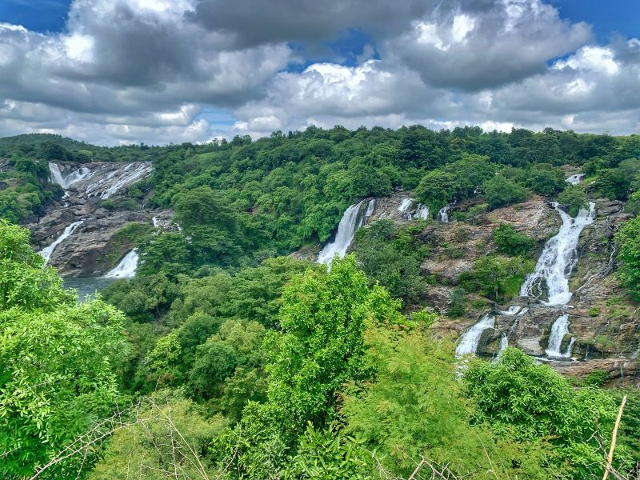
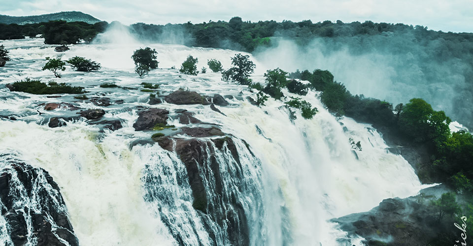
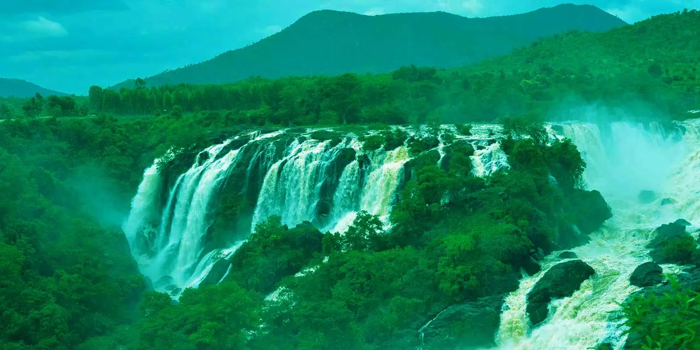
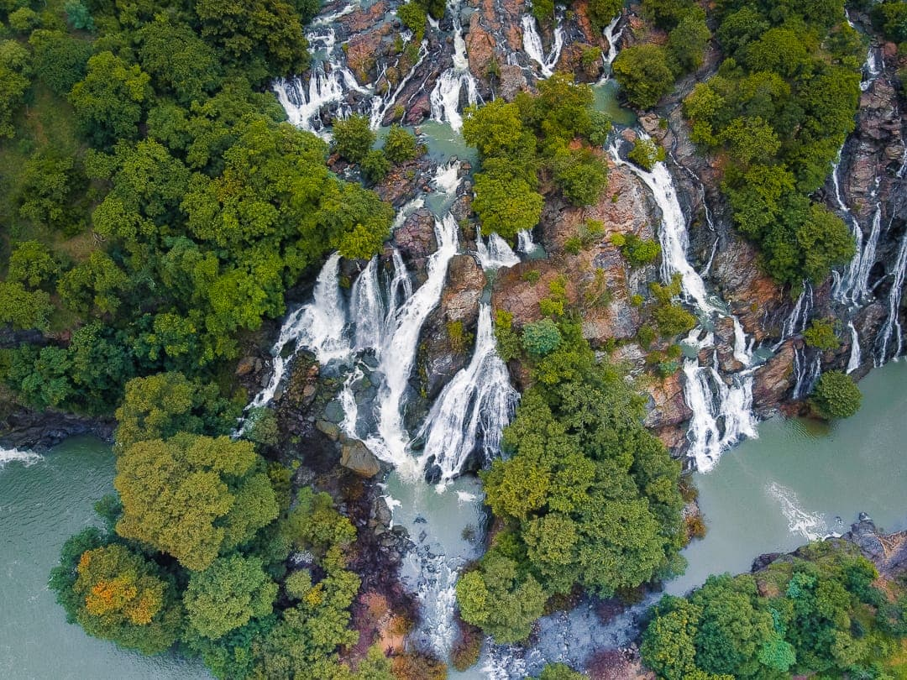
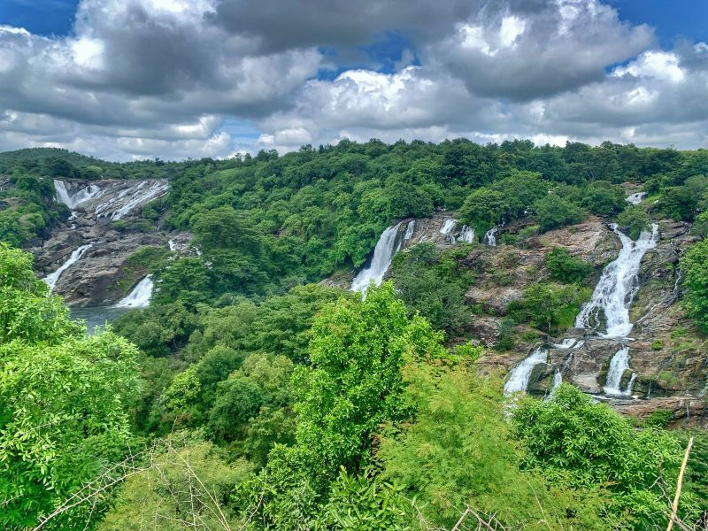

 

 


The Shivanasamudra Falls is on the Kaveri River after the river has found its way through the rocks and ravines of the Deccan Plateau and drops off to form waterfalls. The island town of Shivanasamudra divides the river into twin waterfalls. This creates the fourth largest island in the course of the river. A group of ancient temples is located here and there likely was a village. This is a segmented waterfall. Segmented waterfalls occur where the water flow is broken into two or more channels before dropping over a cliff, resulting in multiple sides by side waterfalls. It has an average width of 305 metres (1,001 ft), a height of 98 m (322 ft), and an average volume of 934 cubic metres per second (33,000 cu ft/s). The maximum recorded volume is 18,887 cubic metres per second (667,000 cu ft/s). It is a perennial waterfall. The time of best flow are the monsoon season of July to October.

